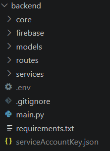
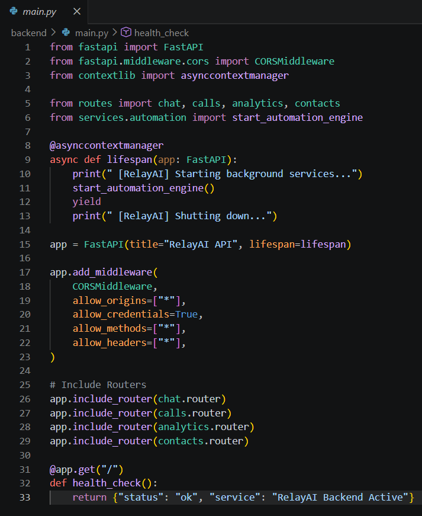
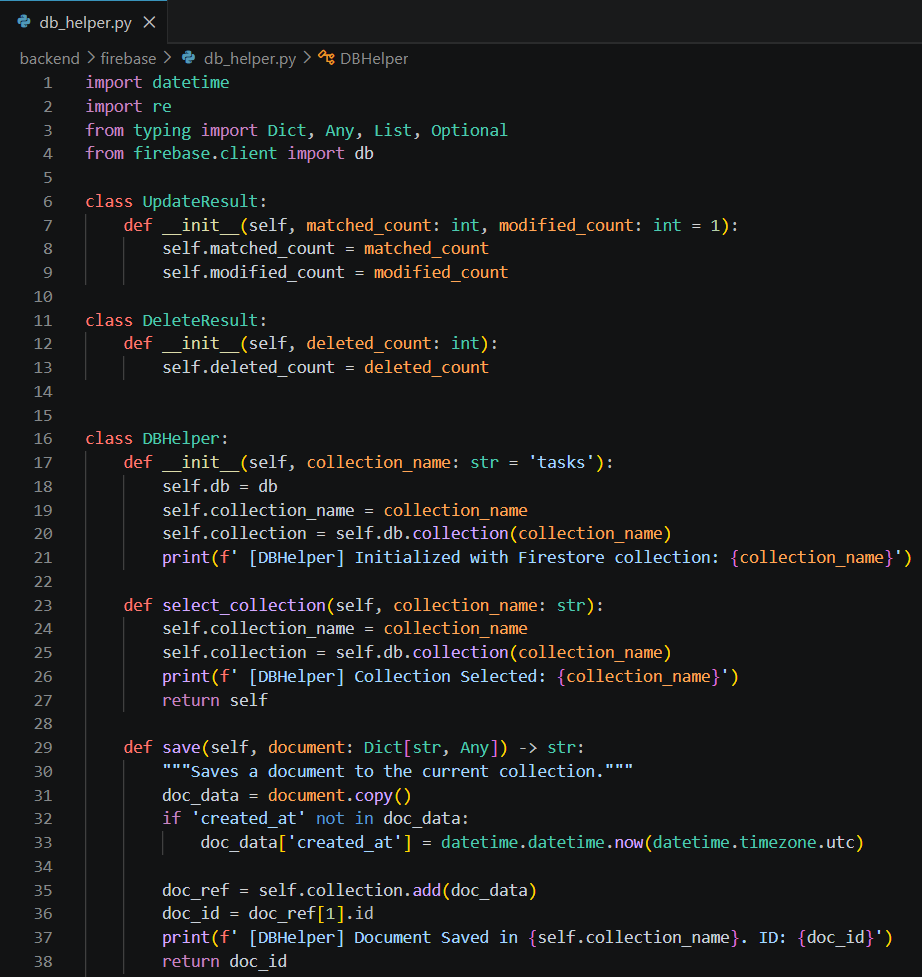

Training Company: Auribises Technologies
Trainer: Mr. Ishant Kumar
Today's development focused on designing the backend architecture for Relay AI using FastAPI. Instead of keeping all business logic inside a single application, the project was organized into multiple services, routers, and utility modules following a clean and scalable architecture. The backend became responsible for handling AI requests, managing contacts, executing phone calls, retrieving analytics, and communicating with Firestore.
The FastAPI application was initialized with modular routing. Separate API endpoints were created for Agentic Chat, Contacts, Calls, and Analytics. This modular design improves maintainability by separating business logic into dedicated files instead of placing everything inside one application.

Multiple REST API endpoints were implemented to handle different parts of the application. Chat requests, contact management, analytics, and call monitoring each expose their own API routes, allowing the React frontend to communicate with the backend through HTTP requests.

Relay AI migrated from MongoDB to Google Firestore. A dedicated database helper was implemented to abstract CRUD operations so that different services can access Firestore without duplicating database logic. This abstraction keeps the application organized while making future database changes easier.

One of the key improvements introduced during today's development was the automation engine. Instead of requiring manual execution, background services periodically monitor pending tasks, execute scheduled phone calls, and synchronize conversation statuses automatically. This allows Relay AI to function as an autonomous task execution platform.
Continue implementing backend services and connect the FastAPI APIs with the React frontend in the following development sessions.
Developing the Relay AI backend demonstrated the importance of software architecture. Compared to earlier prototypes, separating routers, services, utilities, and database operations resulted in a much cleaner and more scalable codebase. This session provided valuable experience in designing backend systems that resemble professional production applications rather than small classroom projects.
The next session will focus on developing the React frontend and connecting it with the FastAPI backend to create a complete full-stack AI application.